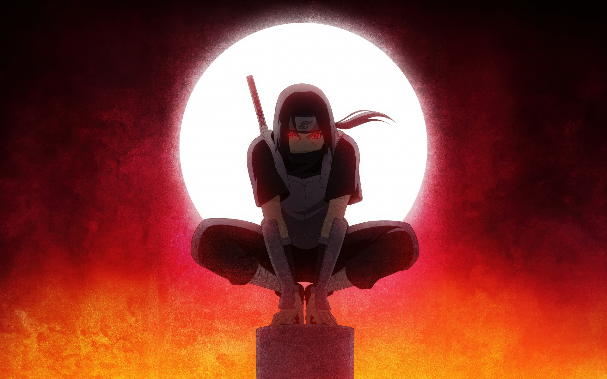

O herói sombrio de Konoha
Itachi nasceu no clã Uchiha, um dos clãs mais poderosos de Konoha (Vila da Folha). Desde criança, ele se mostrou um prodígio — com apenas 7 anos, já pensava como um ninja veterano. Ele assistiu à Terceira Grande Guerra Ninja quando ainda era muito pequeno, o que o traumatizou profundamente e o fez desejar a paz acima de tudo. Ele era extremamente próximo de seu irmão mais novo, Sasuke, a quem protegia com todo o coração.
Com o tempo, o clã Uchiha começou a se rebelar contra a liderança de Konoha, planejando um golpe de estado. Itachi, que já era membro da ANBU (forças especiais secretas), foi recrutado como espião duplo: ele passou a informar tanto seu clã quanto os líderes da vila. No entanto, pressionado pelos anciãos de Konoha, especialmente Danzo, Itachi foi forçado a tomar uma decisão impensável: aniquilar todo o clã Uchiha para evitar uma guerra civil. Com a ajuda de Tobi (ou Obito Uchiha), ele realizou o massacre, poupando apenas Sasuke, com o objetivo de proteger a vila e fazer com que seu irmão crescesse forte o suficiente para derrotá-lo um dia.
Após o massacre, Itachi se juntou à Akatsuki, uma organização criminosa de ninjas renegados. Ele foi visto como um traidor e assassino frio, mas na verdade, sua presença na Akatsuki servia para monitorar as ameaças à Konoha de dentro da organização. Durante esse tempo, Itachi participou de missões importantes da Akatsuki, mas sempre evitando causar danos diretos à vila.
Itachi eventualmente confronta Sasuke em uma batalha épica. Durante a luta, ele demonstra estar doente e com pouca força. No final, ele morre diante de seu irmão, sorrindo, após realizar um gesto de carinho. Mais tarde, Sasuke descobre a verdade através de Tobi: Itachi nunca foi um vilão, mas sim um herói que sacrificou tudo — sua honra, sua vida e seu relacionamento com o irmão — para evitar a destruição de sua vila e dar a Sasuke uma chance de ter um futuro.
Durante a Quarta Grande Guerra Ninja, Itachi é ressuscitado por Kabuto com o jutsu Edo Tensei. Após se libertar do controle de Kabuto, ele luta ao lado de Sasuke mais uma vez e consegue selar Kabuto, acabando com a reanimação de vários ninjas mortos. Antes de desaparecer, ele tem uma última conversa sincera com Sasuke, dizendo que sempre o amou, mesmo quando foi forçado a se tornar seu inimigo.
Itachi é lembrado como um verdadeiro herói trágico. Sua história mostra o peso do dever, os dilemas morais da guerra e o amor incondicional de um irmão. Ele representa o ideal de alguém que faz o que é certo, mesmo que isso signifique ser odiado por todos.